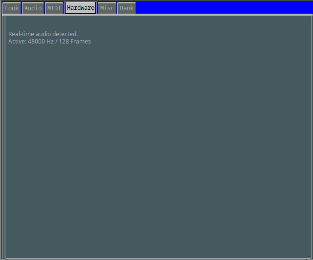
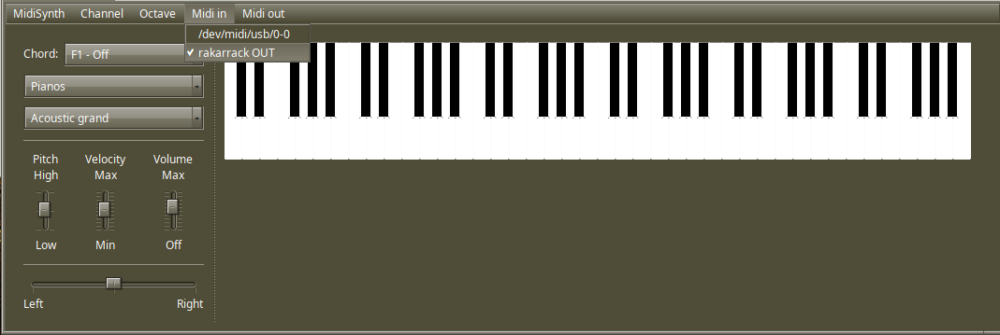
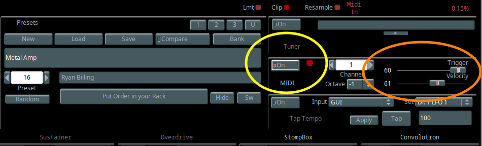
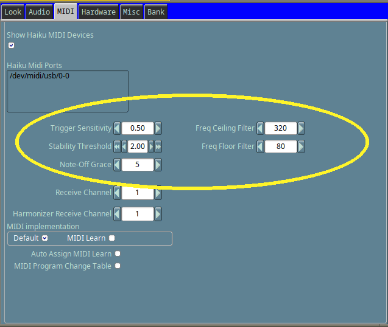
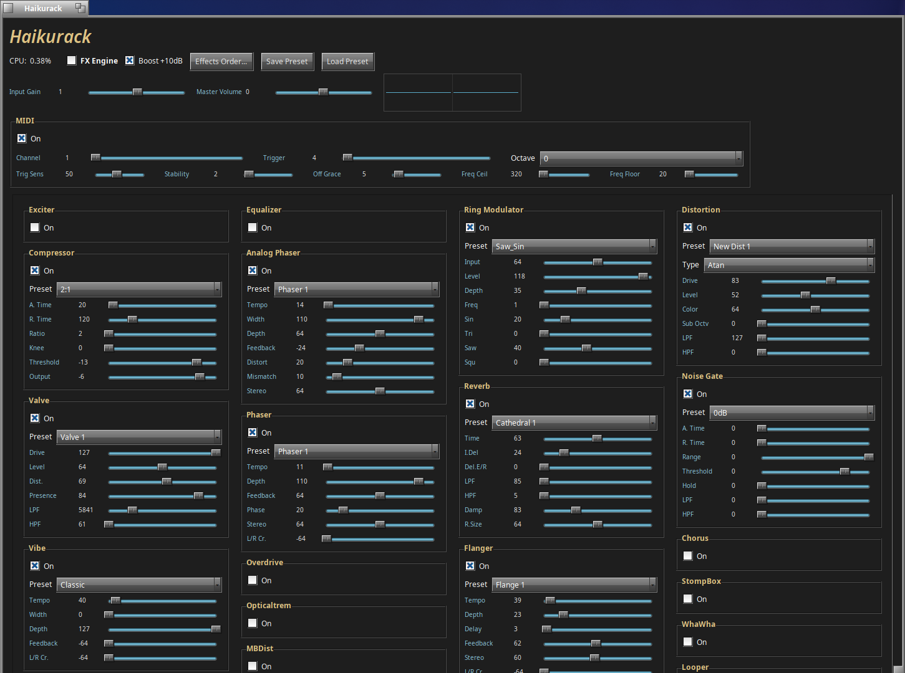

Rakarrack for Haiku auto detects the users frequency and automatically applies the correct Buffer Size (Frames) inside rakarrack on first run.
However, for the best experience with rakarrack on Haiku, real-time audio should be enabled and a frequency of 48khz or lower.
Setting a frequency higher than 48khz will still work in some cases, but some effects like reverb are currently known to crash rakarrack.
To enable realtime audio, you would first check if your audio card has a settings file
that is applicable for setting realtime audio, then edit it and put in /boot/home/config/settings/kernel/drivers
You can visit https://github.com/haiku/haiku/tree/master/src/add-ons/kernel/drivers/audio to check if your audio card has an applicable realtime settings file.
Alternatively, you can use this app I made for Haiku that detects your audio driver and if it supports real-time audio it adds the settings file for you.
To enable realtime audio for an HDA driver, the settings file would look similar to this:
# Settings file for the HDA driver # For 48khz this works really well play_buffer_frames 128 play_buffer_count 4 record_buffer_frames 128 record_buffer_count 4 # If clicking a popping are heard # Increase buffer_count would be first choice before changing buffer_frames
Rakarrack Haiku supports MIDI connections. For example, you can run MidiSynth and select Rakarrack-out.

If rakarrack-out does not appear in MidiSynth make sure to check "Show Haiku MIDI Device" and try again.
Once rakarrack-out is checked in MidiSynth then you would enable the MIDI playback in the main rakarrack control board ( yellow circle ).
Trigger should be kept high in most cases for lower sensitivity. Velocity currently does nothing.

Rakarrack Haiku MIDI has a few settings that can be adjusted to fine-tune MIDI playback.

Rakarrack Haiku supports Online Version Checking. New updates will show a notification if available. You can toggle this option off in Misc tab menu.

Rakarrack Haiku has an experimental Haiku Native version called Haikurack.
Some feature may not work and / or crash.
You can try Haikurack by running:
# Open Terminal and type: rakarrack -H
